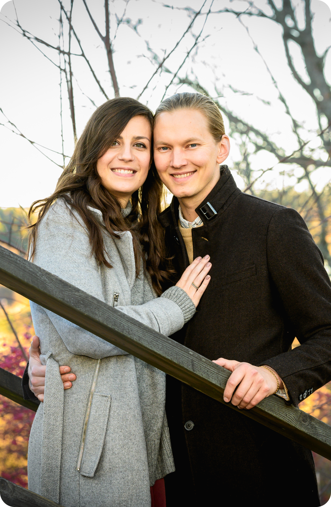

HÁZASODUNK!
És természetesen szeretnénk megosztani veletek ezt a napot. Te, aki
egy linket kaptál erre a weboldalra, fontos vagy számunkra.
Ezen a weboldalon összegyűjtünk minden fontos információt. Tartsátok
szemmel a weboldalt az esküvő előtti hónapban, hogy ne maradjatok le
semmiről, és kérjük, vedd fel velünk a kapcsolatot, ha úgy érzed,
hogy valami fontos hiányzik róla.
Várunk szeretettel, hogy együtt ünnepelhessünk!
Ne felejts el választ küldeni legkésőbb
május 15-ig.
Ölelés,
Izabella & Johan
